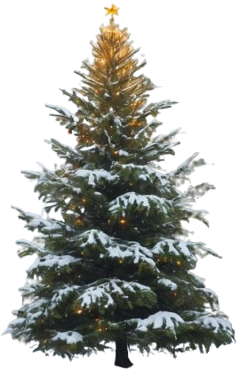

Es isch e bsundere Abschied gsi, am letschte Spiel-Namittag vo de 2jährige Tanneböumli. Ab morn fö d'Wiehnachtsferie ah und mä weiss nid, wär im neue Jahr no einisch wird cho und wär sire grosse Bestimmig darf folge.
Bi paar ne, wie zum Bispiel bim Susi und bim Döbeli weiss mer mit Sicherheit, die wärde vore Familie ufgnoh und dörfe Wiehnachte schön gschmückt mit Liechtli, Kugele und Kerzli verbringe. Was gitts schöners aus z'mitts ire warme Stube wo nach Zimet und Güezli schmöckt chönne stah, wunderschön verziert und vo allne bewunderet? Am Bärbeli loufe Träne vor Vorfreud abe, wenns a di grosse Kinderouge dänkt und die schöne Värsli und Liedli wo d Mönsche de bim Böumli wärde singe. Hoffentlich cha ou äs bire Familie Wiehnachte fiere!
Am nächschte Tag isches sowitt, s Bärbeli ghört zu dene wo scho gnueg gwachse si und dörfe vor dr Landi stah. Jedesmal wenn e Familie chunnt und vo Boum zu Boum geit, wird s Bärbeli ganz kribbelig und hett Angscht, vor lutter herrje Nadle z 'verlüre - das wär de gar nid guet, es möcht ja müglischt hübsch si für di Familie wo sech ihns uselist.
Langsam kehrt sech di riese Vorfreud i Unsicherheit. Was wenn i a Wiehnachte immer no da stah? Wenn i vo dusse muess zueluege wie di andere Böumli besunge wärde und ig hie ellei muess frühre? Täg gö, es wird immer kälter und d'Lüt renne immer gstresster am Bärbeli verbii. Es schiint, als öb sech die gar nid fröie uf di wunderbari Zitt, als öb si dä Zauber ir Luft gar nid wahr näme!
S Bärbeli faht a zwiefle, isch es ächt, wüus unde ume chli breiter isch als di Meischte? Und e chli chliner aus die wo jetzt scho mit Stolz dervo dreit si worde und ihns mittleidig agluegt hei bim verabschiede? Aber mit chli Ängelshaar oder chli Liechtli chönnt mer das doch gäbig verdecke. Langsam tuet ihm alles weh vom grad stah. Wenn ds Liecht ir Landi us geit, de huuret s Bärbeli i sech zäme und luegt zu däm einte Stärn ufe, wo häll Nacht für Nacht uf ihns abeschient. "Hesch du ou nid dire Bestimmig chönne folge? Passisch du ou z wenig id Vorstellig vo de Andere und me hett di eifach zrügglah?"
Es dünkt eim, das Böimli sig vo Tag zu Tag chli chliner und chrummer worde. Truurig steits näb de Wiehnachtsstärne und versuecht vergäbe, so schön z si wie d Lüt sech das vorstelle damit si di perfekti Wiehnachte chöi ha. Gärn würd es doch are Familie hälfe, glücklichi Wiehnachte z fiere.
Es isch Heiligabe und d Landi tuet scho glii zue. Dr Chef leit d Händsche ah um s Bärbeli und di andere Böimli, wo alli truurig driiluege, ufe Ahänger z lade.
Da chunnt ganz pressiert e Frou derhär, gstresst und erlediget vo all dene Wiehnachtsvorbereitige und suecht no im letschte Momänt es Tanneböimli für ihri Familie. Si louft vo Boum zu Boum und weiss nid rächt, öb si der gross schlank Röbi oder eher s fiene zierleche Marie söll näh. Da gspürt si plötzlich dä verzwieflet Blick im Rügge. Sie dräit sech zum Bärbeli um und seit: "du wärsch ja ou ganz es Hübsches, aber eifach chli z breit für i üsi Stube." S Bärbeli kämpft no es letschts Mal für si Troum und macht sech ganz gross. Wo d Frou gseht wie das Böimli vo inne use strahlet und se hoffnigsvoll und bittend aluegt, geit si zum Bärbeli, stricht ihm über di spitzige Nadle und lächlet: "möchtisch du zu üs cho Wiehnachte fiere?"
Text: Nicole
Website: Luc